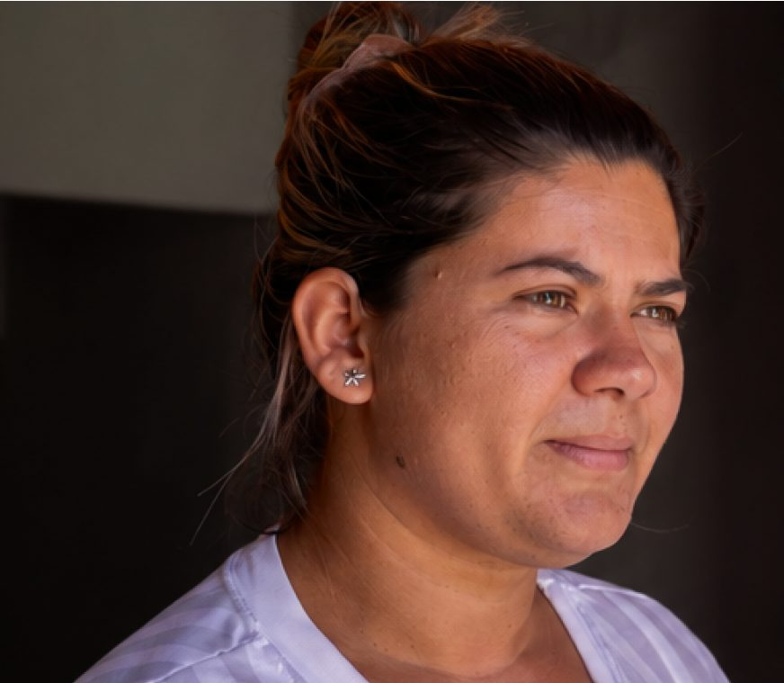

Um ecossistema de soluções
que impulsiona a força do SUS.
Em um só lugar, as ferramentas digitais que ajudam as equipes de saúde a enxergar quem precisa de cuidado e a agir a tempo.
Quem cuidar primeiro,
nome a nome
Lemos o prontuário eletrônico e entregamos à equipe de saúde a lista de quem está sem acompanhamento, com critérios alinhados ao cofinanciamento federal.
Entre em contatoPalmeira das Missões (RS) fez a prevenção
chegar a mais pessoas
3 quadrimestres de crescimento contínuo após o início da parceria com a ImpulsoGov
Todos os dias eu uso o Portal Impulso. Essas ferramentas vieram pra aproximar a gente do cidadão
Uma mensagem
no tempo certo pode
salvar uma vida.
Enviamos lembretes automáticos pelo WhatsApp para quem está com exames preventivos e consultas em atraso.
Entre em contatoCroatá (CE) avançou no acompanhamento das linhas
de cuidado prioritárias da Atenção Primária
Com o Portal Impulso, o município superou as metas federais em todas as principais frentes acompanhadas.

A última vez que tinha feito o exame tinha sido em 2012. Se eu não tivesse recebido a mensagem, talvez nem fosse mais
Resultados
à vista da gestão
Visão gerencial de status, entrega e engajamento das mensagens no município.
- Gestão orientada por dados
- Visão completa dos indicadores
- Atualização em tempo real
Faça parte
do impulso.
Cada um
do seu jeito.
Se você é gestor de saúde, leve nossas soluções para o seu município. Se você quer investir em um SUS mais forte, se torne nosso parceiro. Entre em contato e comece a fazer parte.